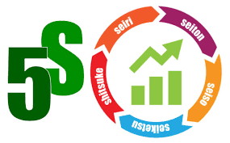
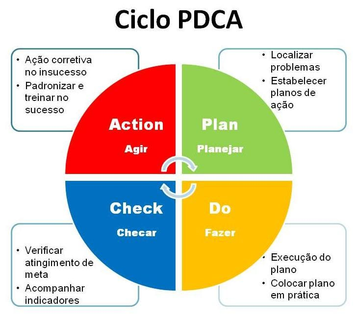
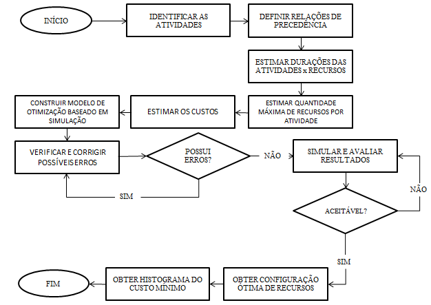
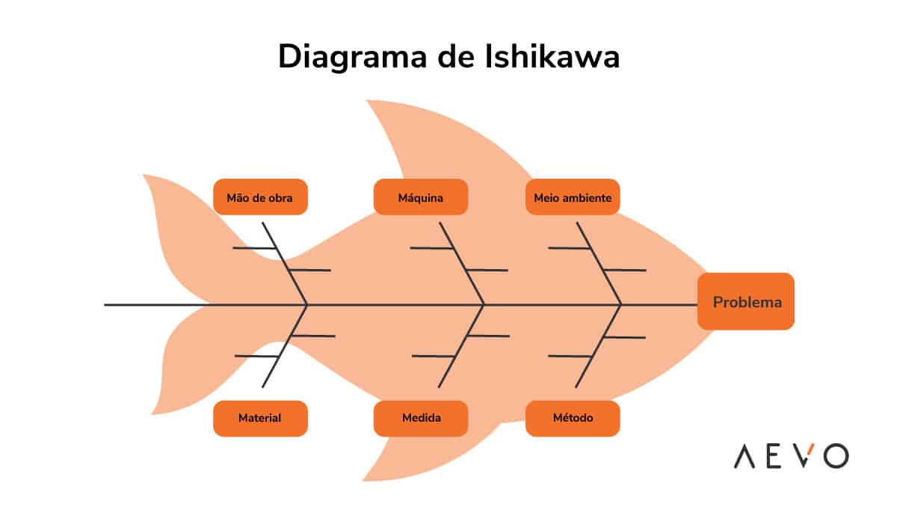
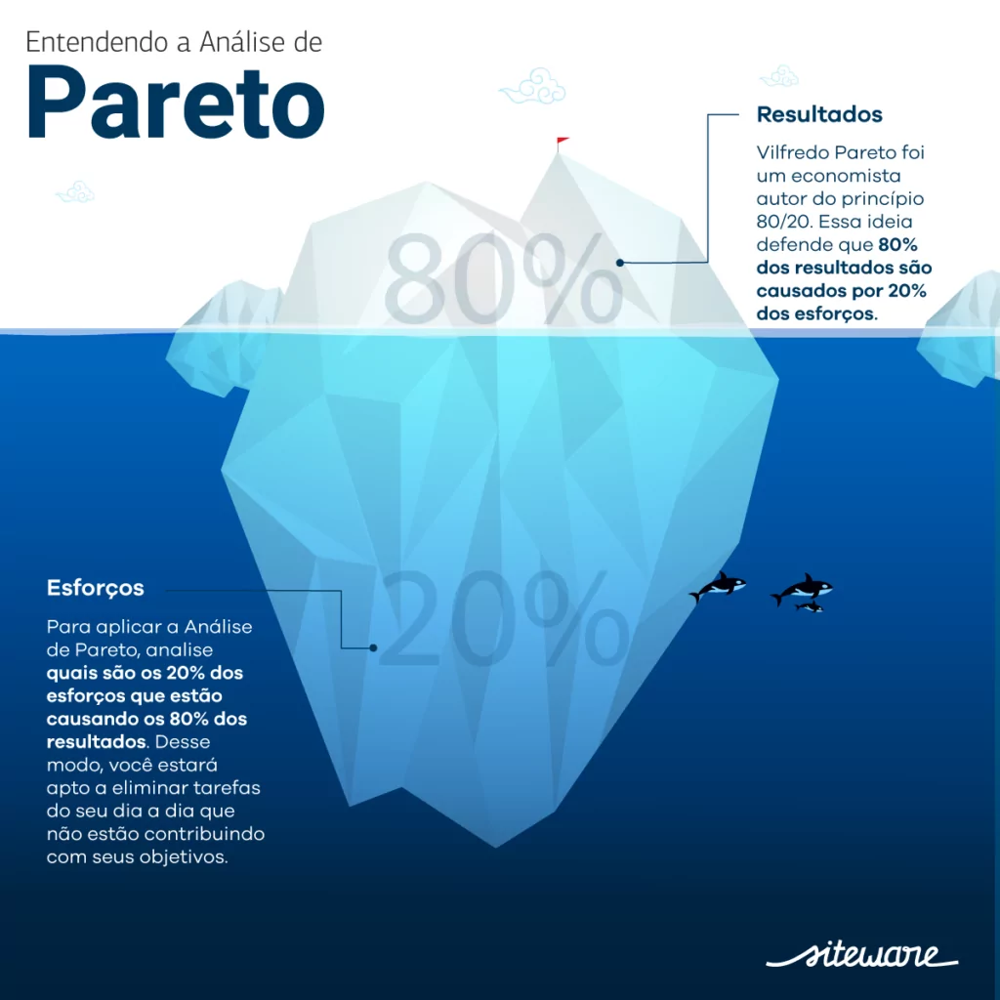

O 5S é um programa de gestão para melhorar diversos pontos de uma empresa, como a organização, limpeza e padronização.
Foi criado no Japão e originalmente significa Seiri, Seiton, Seiso, Seiketsu e Shitsuke.
Referência: Metodologia 5s
é uma ferramenta de qualidade de quatro fases, amplamente utilizada para a solução de problemas, controle e melhoria contínua de processos e produtos.
Plan, Do, Check, Act, ou em português, Planejar,Fazer, Verificar e Agir.
Referência: PDCA
A ferramenta 5W2H transforma em ações práticas toda a análise e a formulação de estratégias idealizadas para o plano de ação.
What: o que será feito? Why - por que será feito? Where - onde será feito? When - quando será feito? Who - por quem será feito?
Referência: 5W2H

é um diagrama que descreve um processo, sistema oualgoritmo decomputador.
São amplamente utilizados em várias áreas para documentar, estudar, planejar, melhorar e comunicar processos complexos por meio de diagramas claros e fáceis de entender.
Referência: Fluxograma
é uma ferramenta de qualidade de quatro fases, amplamente utilizada para a solução de problemas, controle e melhoria contínua de processos e produtos.
Em linhas gerais, ele serve para analisar os processos, em diferentes perspectivas, relacionando causas potenciais para um determinado cenário.
Referência: Diagrama de Ishikawa
é uma representação gráfica que permite compreender as causas de perdas, defeitos e problemas que existem em uma organização e como manejá-los.
esse conhecimento, é aplicada a regra80/20, queprevê que 80% dos efeitos estão relacionados a 20% das causas. Ou seja, se foremidentificadasas causas raízes, 80% dos problemas serão solucionados.
Referência: Diagrama de Pareto
